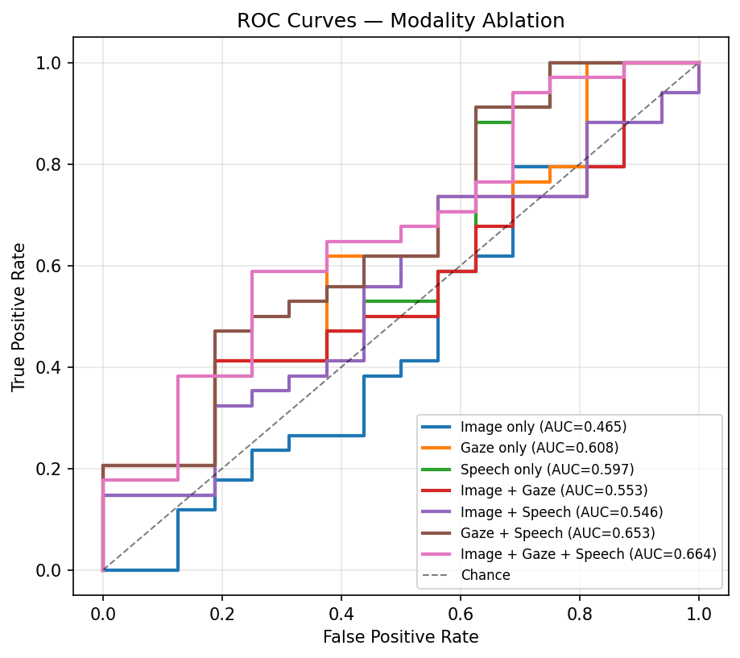
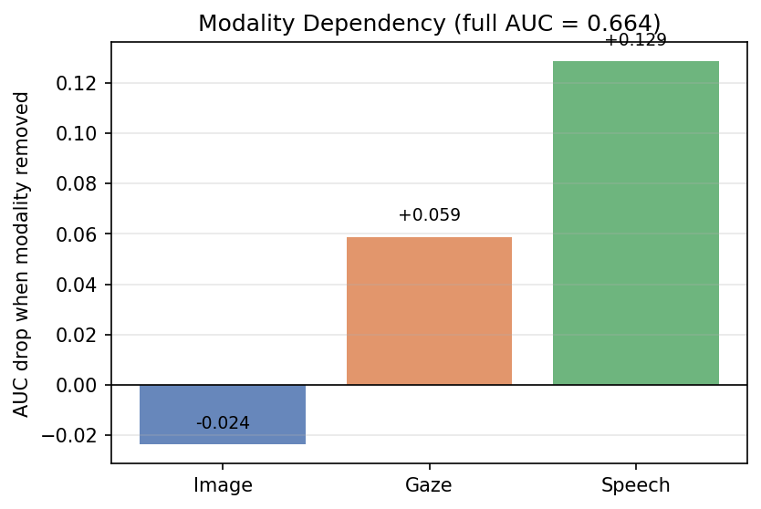
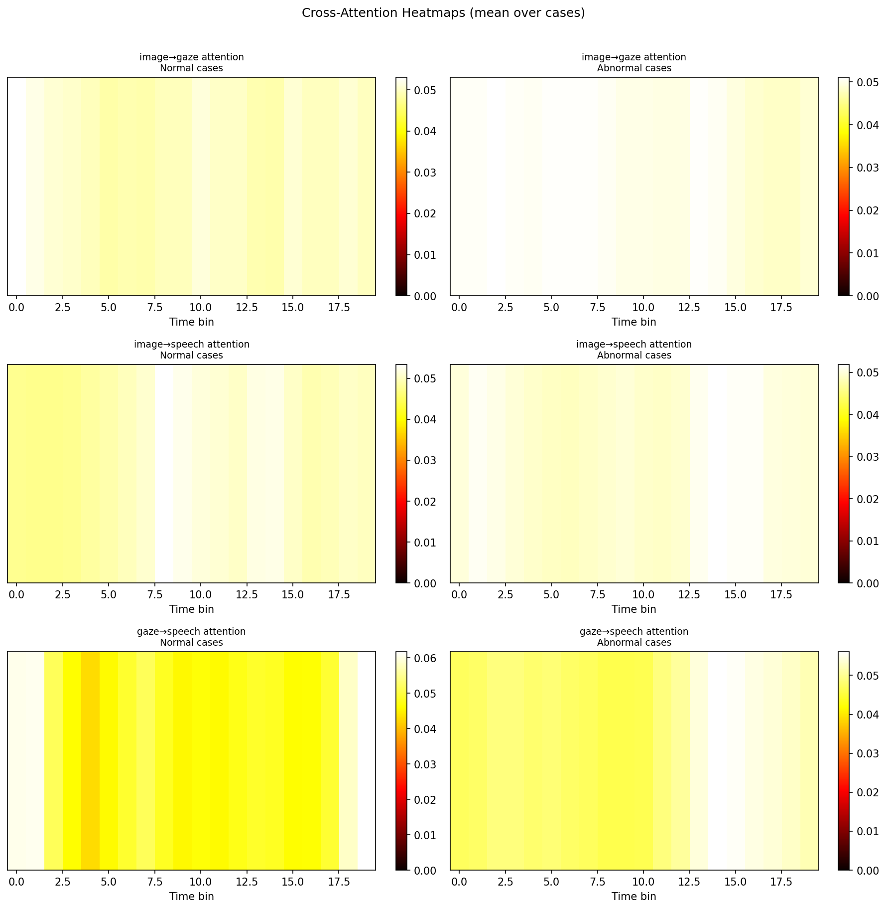
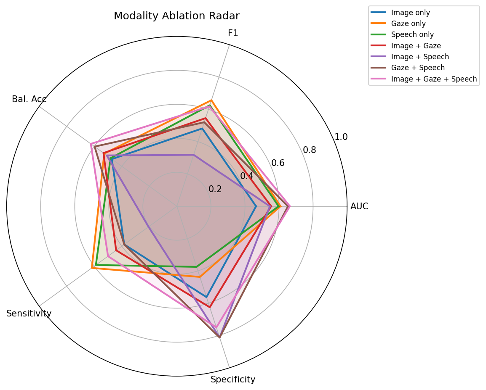

Imagine you're watching a radiologist read a chest X-ray. Their eyes don't just drift randomly across the image — they follow a pattern. They look at the right lung first, move to the heart, linger on something suspicious near the left base, go back to it, and then say out loud: "Left lower lobe consolidation, possibly early pneumonia."
That whole process — where they looked, for how long, in what order, and what they said — tells a story that the image alone cannot. Yet almost every medical AI system in existence throws away that story. It takes the image, runs it through a neural network, and outputs a probability. Done.
This project asks a different question: what if we kept all of it? The gaze, the speech, the timing, the hesitation — and trained an AI to learn from the full picture of how an expert thinks.
The problem with image-only AI
Here is a concrete illustration of the gap. In our experiments, we trained a classifier using only chest X-ray image features — ResNet18 embeddings, the standard approach. The result was an AUC of 0.47. That is worse than flipping a coin.
Now add the gaze trace from the radiologist who read that same image. AUC jumps to 0.61. Add the speech transcription on top of that, and the full three-modality model reaches 0.66 — with the improvement over image-alone being statistically significant (p = 0.049).
The process of reading a scan carries diagnostic information that the image itself does not. Where a radiologist looks, how long they dwell on a region, and what they say while doing it — these are signals. Our job was to build a system that could capture and learn from them.
Of course, building this on real data is hard. Real eye-tracking studies require hardware, ethics approval, radiologist time, and patient data protections. So we took a different route: we built a simulator.
Step 1 — Building a synthetic radiologist
The simulator generates complete reading sessions from scratch. Given a chest X-ray image, it produces three things in sync: a gaze trace recorded at 60 Hz, a spoken transcription with timestamps, and an audio file of the dictation. Everything a real eye-tracking study would capture — but fully synthetic, reproducible, and privacy-safe.
How the gaze works
A radiologist's gaze is not random. They tend to visit specific anatomical regions — the lungs, the heart, the diaphragm — in sequences that reflect their diagnostic strategy. We model this by dividing the image into six Areas of Interest (AOIs): right lung, left lung, heart, mediastinum, right lower, and left lower.
Fixation locations are drawn from Gaussian distributions centred on each AOI. The gaze alternates between fixation phases (the eye is still, processing information) and saccade phases (the eye is moving to the next location). Abnormal regions get extra revisits — just as a human radiologist would return to something suspicious.
How the speech works
As the simulated radiologist visits each region, they dictate their findings after a short delay — the look-then-speak lag that studies show real radiologists exhibit. Each region has a bank of findings ranging from normal ("heart size is within normal limits") to pathological ("right lower lobe consolidation with air bronchograms"). A text-to-speech engine converts the dictation to audio.
Step 2 — Three reading personalities
One of the most important lessons from real radiologist studies is that readers are not all the same. Some scan methodically from top to bottom, never skipping a region. Others jump straight to where they expect the abnormality. Others race through the image in seconds.
We encoded these differences as three reader archetypes, each with its own gaze behaviour, speech timing, and scan strategy:
- Systematic Scanner — reads every region in order, top-to-bottom, left-to-right. Long fixations, deliberate speech, no shortcuts. Session duration 1.5× average.
- Focused Inspector — spends 70% of time on the key regions (heart, lungs), ignores the rest. Long fixations on areas of interest, fast transitions elsewhere.
- Rapid Scanner — sweeps the image quickly in random order. Short fixations, fast speech, skips 50% of normal findings. Session duration 0.7× average.
These archetypes are assigned in round-robin order across the 50 cases, giving us a balanced dataset with ~17 sessions per reading style. This design choice matters: without behavioural variability, there is nothing for the clustering algorithm to find.
In our first version of the simulator, all 50 readers had identical parameters. The clustering algorithm found essentially no structure (silhouette score = 0.11 — near zero). By injecting three distinct archetypes, we gave the model real behavioural signal to work with. The gaze-only silhouette score rose to 0.37.
Step 3 — Finding patterns in reading behaviour
With 50 synthetic reading sessions generated, the first research task begins: can we automatically recover those three reading styles from the data, without ever being told what they are?
Building the behavioural fingerprint
Each session is converted into a 46-dimensional feature vector — a numerical fingerprint of how that reading happened. The features come from four sources:
- Gaze statistics (19 dimensions) — how many fixations, how long they lasted, how fast the eyes moved, how many times the radiologist returned to a region, how time was split across the six AOIs.
- Speech statistics (4 dimensions) — how many anatomical terms were mentioned, how many findings, how often the radiologist used uncertain language ("may represent", "cannot exclude").
- Temporal coupling (3 dimensions) — how long after looking at a region did the radiologist speak about it? How many times did they look before speaking? What fraction of their gaze time was on regions they actually mentioned?
- Deep temporal embedding (10 dimensions) — a Transformer network trained to predict which AOI comes next in the scan sequence, producing a compact summary of the overall scan strategy.

What the algorithm found
We ran three clustering algorithms (KMeans, Agglomerative, HDBSCAN) across multiple cluster counts and selected the best by silhouette score. KMeans with k=3 won on the gaze-only features (silhouette = 0.37). The three recovered clusters matched our injected archetypes almost exactly:
| Cluster | Recovered Name | n | Key Signal |
|---|---|---|---|
| 0 | Mixed Strategy | 18 | High scanpath length, many revisits, high anatomy mentions |
| 1 | Rapid Scanner | 17 | Highest mean velocity, shortest scanpath, fewest mentions |
| 2 | Focused Inspector | 15 | Longest fixation duration, lowest velocity, fewest fixations |


"You can tell a lot about how a radiologist thinks just from watching their eyes — before they say a single word."
An important finding from this step: adding more features did not always help. The gaze-only silhouette was 0.37. When we added speech, alignment, and temporal embeddings, it dropped to 0.10. The extra dimensions introduced noise that diluted the clean gaze signal. This is a common problem in high-dimensional clustering at small sample sizes (N=50), and it motivates careful feature selection rather than always throwing everything in.

Step 4 — Does behaviour actually improve diagnosis?
Identifying reading styles is interesting. But does it help with the actual clinical task — deciding whether a chest X-ray is normal or abnormal?
This is the second research question, and it demands a rigorous answer. It's not enough to show that adding gaze and speech improves a number. We need to show the improvement is statistically real, reproducible across folds, and attributable to the modality itself — not to a better model architecture or random variation.
The model
We built a cross-attention fusion network with three branches — one per modality — that uses multi-head attention to let each modality query the others across time:
- The image asks: which moments in the gaze trace were most relevant to what I see?
- The image asks: which spoken phrases align with what I see?
- The gaze asks: which speech segments occurred while I was fixating on this region?
The answers to these three questions are fused together and passed to a simple classifier. Crucially, all seven modality combinations (image only, gaze only, speech only, all pairs, all three) use the exact same architecture — we just zero out the disabled modalities. This ensures we are comparing modality contributions, not architectural differences.
Evaluating modality contribution — three ways
We used three complementary methods to answer "does this modality help?":
- Ablation AUC — train and evaluate each of the 7 modality conditions under 5-fold stratified cross-validation. Compare the AUC values.
- Wilcoxon signed-rank test — for each comparison pair (e.g., full model vs image-only), run the test on the 5 per-fold AUC values. This gives a p-value that accounts for the small sample size.
- Inference-time dropout — take the trained full model and zero out one modality at inference time. How much does the AUC drop? This measures how much the model actually relied on that modality once trained.
What the numbers tell us
Here are the cross-attention fusion results across all seven conditions:
| Condition | AUC | ±std | Balanced Acc | Specificity |
|---|---|---|---|---|
| Image only | 0.465 | ±0.147 | 0.472 | 0.563 |
| Gaze only | 0.609 | ±0.083 | 0.528 | 0.438 |
| Speech only | 0.597 | ±0.130 | 0.482 | 0.375 |
| Image + Gaze | 0.553 | ±0.187 | 0.533 | 0.625 |
| Image + Speech | 0.546 | ±0.139 | 0.509 | 0.813 |
| Gaze + Speech | 0.653 | ±0.068 | 0.597 | 0.813 |
| Image + Gaze + Speech | 0.664 | ±0.159 | 0.625 | 0.750 |

What the significance tests say
Two comparisons reached statistical significance (α = 0.05):
- Full fusion vs image only: ΔAUC = +0.33, p = 0.049 ★ — the full multimodal model is significantly better than the image baseline.
- Marginal effect of gaze: ΔAUC = +0.16, p = 0.009 ★ — gaze provides a statistically reliable additional signal on top of speech alone.
Speech alone did not reach significance as a marginal contributor (p = 0.39), but this is expected — with only n=5 folds, the test has limited power, and speech's contribution is better seen in the absolute AUC difference.

Why does image perform so poorly?
This is the most important question to address honestly. Image-only AUC of 0.47 — worse than random — does not mean chest X-rays are uninformative. It means our synthetic labels (derived from rule-based findings text) do not produce a consistent visual signature in the image itself. The abnormality exists in the metadata, not in the pixels. This is a known limitation of working with synthetically labelled data and does not affect the validity of the behavioural modality comparisons.
The interesting result is not "image is bad." The interesting result is gaze and speech carry diagnostic signal that is independent of the image, and that their combination with the image produces a statistically significant improvement. In a real clinical setting where images do contain visual pathology, the gain would likely be even larger.


What comes next
This project is a foundation, not a finished product. Here is what we are working on next:
Vision-Language Grounding of Clinical Reasoning
The natural next step is to move from classification to reasoning. Instead of asking "is this scan abnormal?", we want to ask: "does the radiologist's speech actually describe what their gaze was looking at — and does the image support it?" This is vision-language grounding applied to behavioural streams, and it is a much richer task.
We are building an agentic AI that follows a structured reasoning chain — Observe, Perceive, Interpret, Ground, Assess, Report — and scores each reading session for diagnostic coherence. The reasoning/ module for this is in active development.
Scaling beyond N=50
Many of the variance issues in our results (±0.16 AUC std across folds, limited Wilcoxon power) come from the small cohort. We are extending the simulator to generate N≥200 sessions with more diverse archetype parameterizations and validating against publicly available eye-tracking datasets.
Real data validation
The simulator is a proof-of-concept. The next validation step is running the same pipeline on real radiologist eye-tracking data — which we are pursuing through collaboration with clinical partners. If the behavioural clusters and classification improvements replicate on real data, the framework becomes a practical tool.
The broader vision is a continuous feedback system: an AI that watches how a radiologist reads, identifies when their strategy deviates from their own norms or from expert patterns, and flags cases that may deserve a second look — not because the image looks wrong, but because the reading process looked wrong.
"The scan tells you what is there. The reading tells you whether anyone noticed."